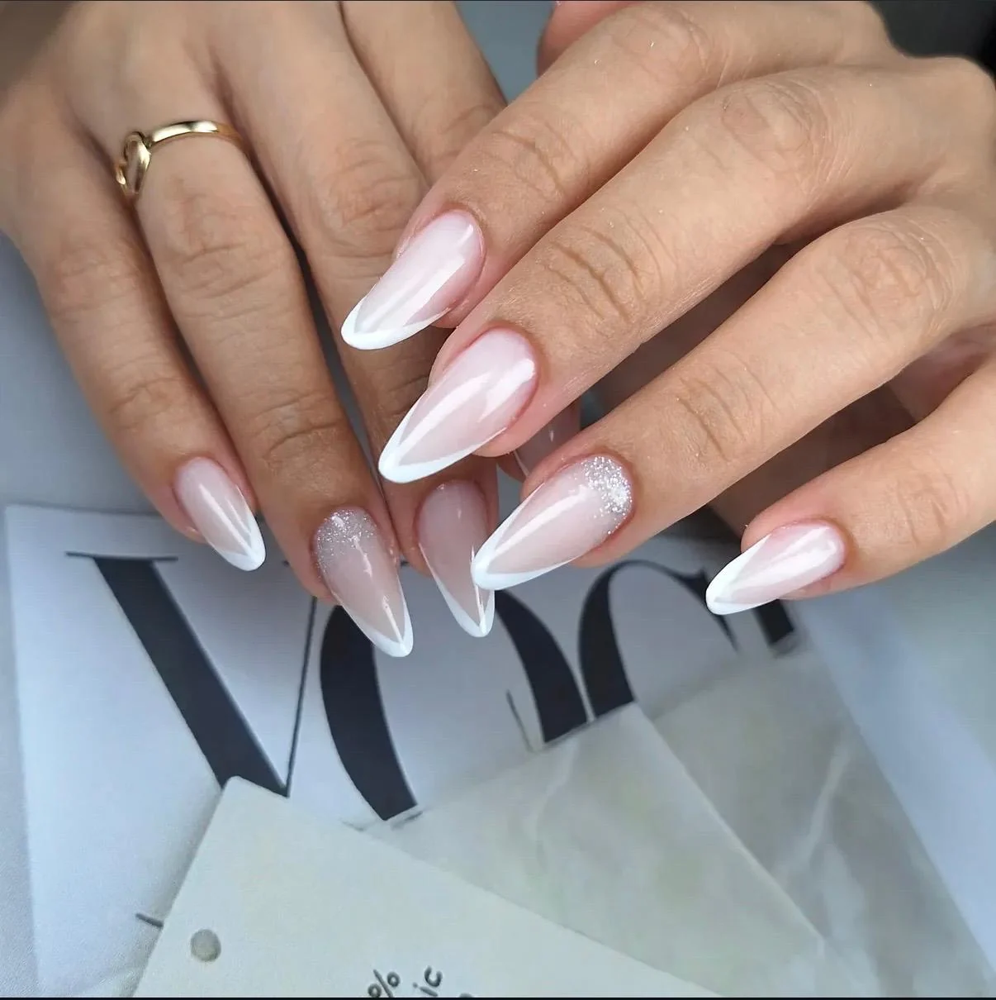
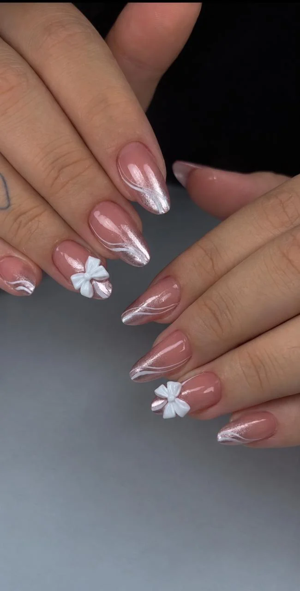
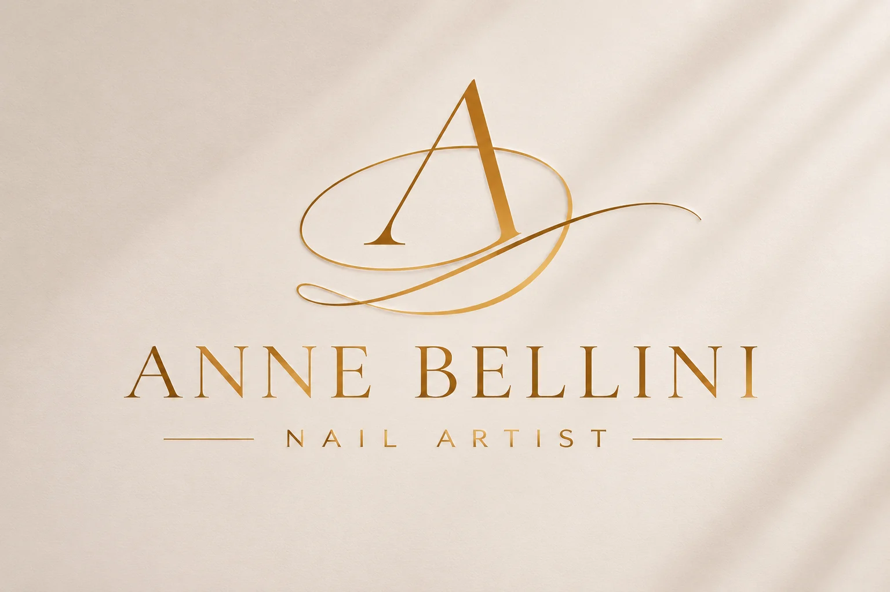

01✳
Manicure
tradicional
O cuidado essencial, com acabamento caprichado e atenção à beleza natural das unhas.
Consultar horárioNAIL ARTIST · SOROCABA, SP
Unhas que expressam sua personalidade, com delicadeza, estilo e um toque de arte em cada escolha.



PRAZER, ANNE BELLINI
O cuidado com as unhas também faz parte de quem somos. Entre tons delicados, desenhos autorais e acabamentos marcantes, cada escolha pode revelar um pouco da sua personalidade.
Meu trabalho é valorizar essa expressão através da manicure e da nail art — com atenção ao resultado e aos detalhes que fazem diferença.
Conheça meu InstagramSEU MOMENTO DE CUIDADO
Do clássico às produções mais elaboradas, encontre o estilo que combina com você. Consulte detalhes e disponibilidade pelo WhatsApp.
O cuidado essencial, com acabamento caprichado e atenção à beleza natural das unhas.
Consultar horárioPara quem deseja explorar novos comprimentos e formatos com um visual marcante.
Consultar horárioTraços, texturas e detalhes criativos para transformar suas unhas em uma peça única.
Consultar horárioUma alternativa para renovar o visual das unhas. Consulte as opções disponíveis.
Consultar horário* Os serviços são apresentados sem valores. Consulte opções, detalhes e disponibilidade diretamente com Anne.
O MEU TRABALHO
Inspirações, cores e acabamentos que ganham vida em cada atendimento. Explore uma seleção de trabalhos reais.
Ver mais no InstagramO luxo está em se sentir
você mesma.
ONDE ME ENCONTRAR
Estou na região central de Sorocaba, com acesso pela Rua Manoel José da Fonseca.
SEU PRÓXIMO HORÁRIO
Tem uma referência em mente? Quer conhecer as opções? Me chame no WhatsApp para consultar a agenda.
Agendar pelo WhatsApp